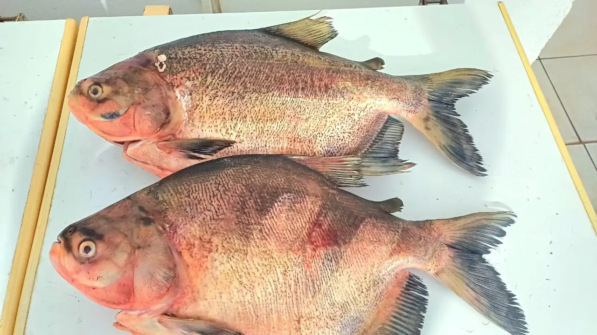
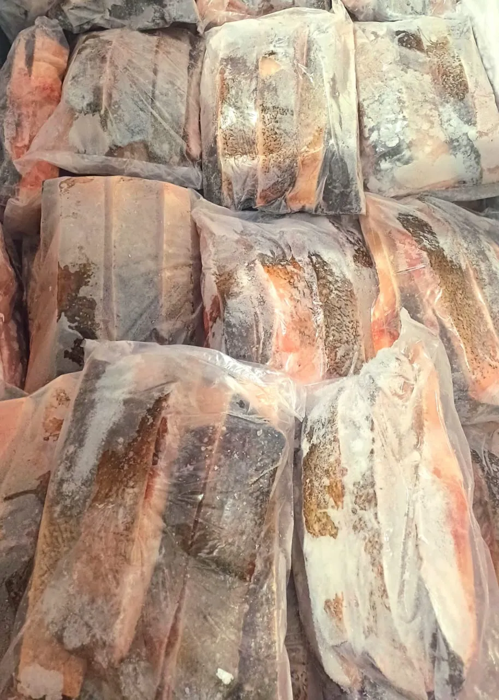
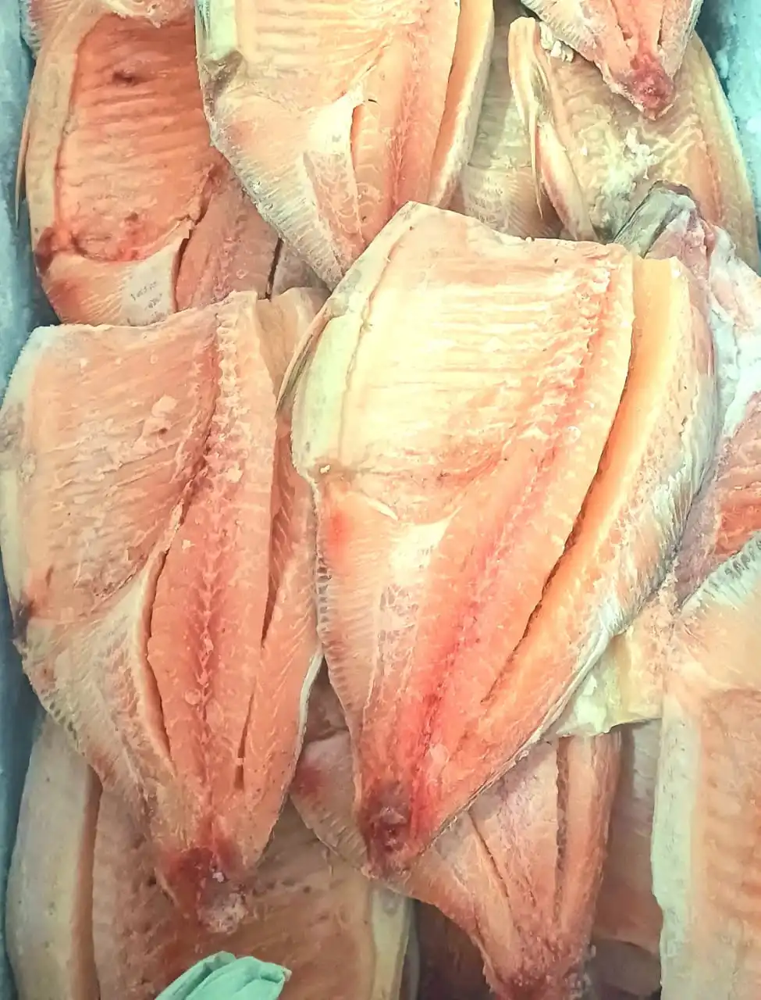
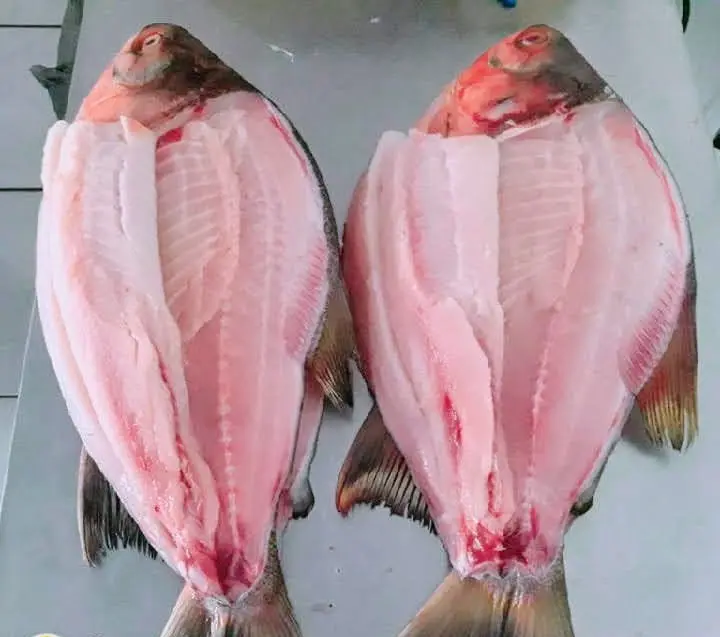
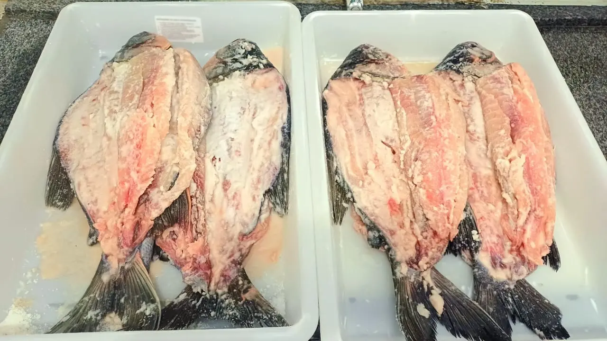

Tambatinga
Ele é o cruzamento entre a fêmea do Tambaqui (Colossoma macropomum) e o macho da Pirapitinga (Piaractus brachypomus).
Escolha o Corte:
Retire na loja: R. Bom Jardim, 379 — Centro, Cáceres.
Tambatinga: Versatilidade e Sabor do Melhor da Piscicultura Regional
A Tambatinga é um peixe de criação obtido pelo cruzamento entre o Tambaqui (Colossoma macropomum) e a Pirapitinga (Piaractus brachypomus), dois dos maiores e mais apreciados peixes de escama da Amazônia e do Centro-Oeste brasileiro. O resultado desse híbrido é um peixe que combina o melhor das duas espécies: o porte avantajado e a rusticidade do Tambaqui, com a carne mais clara e o sabor suave da Pirapitinga. Criada em tanques controlados, a Tambatinga apresenta excelente rendimento de carne por quilo, crescimento acelerado e adaptação natural ao clima do Mato Grosso, tornando-se uma das apostas mais sólidas da piscicultura regional.
Entre todos os cortes disponíveis, a ventrecha é o predileto de quem conhece bem a Tambatinga. A parte ventral concentra uma camada generosa de gordura entremeada à carne, o que resulta em uma textura incrivelmente suculenta ao ser frita em óleo quente ou assada na grelha. Já a banda — metade do peixe cortada longitudinalmente — é perfeita para o forno ou para a brasa lenta, marinada com alho, sal grosso, limão e pimenta. O corte sem espinha é a opção ideal para moquecas, caldeiradas e pratos mais elaborados, garantindo praticidade sem abrir mão do sabor característico do peixe.
Uma das especialidades únicas da Peixaria Rio Paraguai é a Tambatinga Salgada, feita exclusivamente sob encomenda. O processo artesanal de salga envolve a aplicação cuidadosa de sal grosso nas bandas do peixe, seguido de um período de cura que concentra os sabores e preserva a carne de forma natural — sem aditivos químicos ou conservantes industriais. O resultado é um produto com textura firme, sabor intenso e vida útil prolongada, perfeito para quem deseja manter um estoque em casa ou presentear alguém com um produto genuíno e artesanal.
Por ser um produto que exige tempo de preparo, a Tambatinga Salgada precisa ser encomendada com antecedência pelo WhatsApp. Os demais cortes — inteiro, ventrecha, banda e sem espinha — estão disponíveis conforme o estoque do dia. Recomendamos confirmar disponibilidade antes de vir até a loja para garantir o corte de sua preferência sempre fresco e no ponto certo.